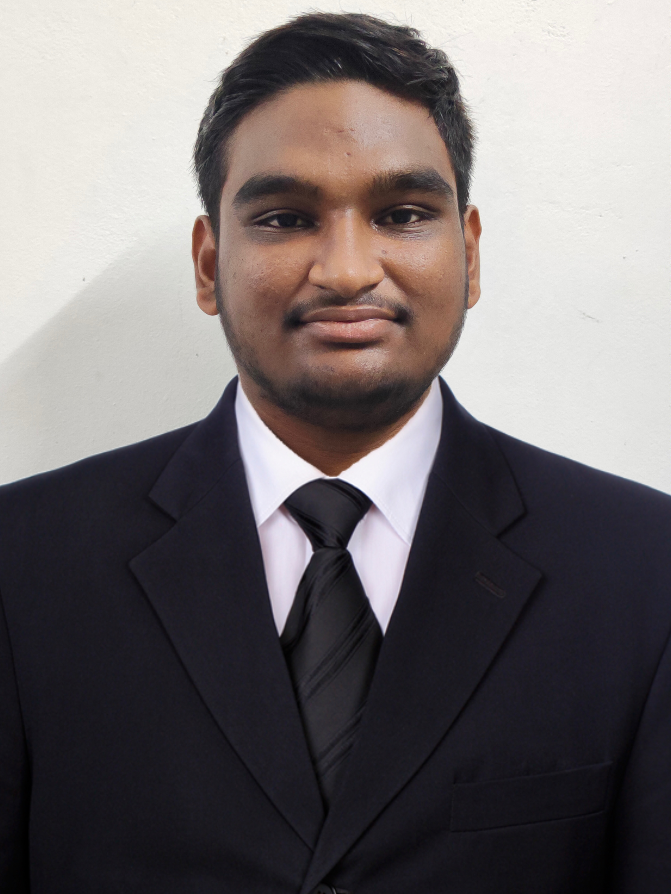

Mallemputi Sai Teja

Career Objective
Highly skilled and motivated web developer with a passion for crafting responsive and visually appealing websites. Proficient in HTML, CSS, and JavaScript, with experience in front-end and back-end development frameworks.
Education
Amrita Vishwa Vidyapeetham 2021-Present
B.Tech in Computer Science And Engineering Chennai,India
CGPA:8.53/10.0
Sri Chaitanya Junior College 2019-2021
Higher Secocondary School Education Vijayawada,Andhra Pradesh,India
Percentage:95.2\%
DR KKR Gowtham High School 2018-2019
High School Education Gudivada,Andhra Pradesh,India
{Percentage:95\%}
Technical Skills
Languages: Java, Python, C++,HTML,CSS,Java Script,SQL
Developer Tools: VS Code, IntelliJ,Apache NetBeans
Soft Skills: Time Management, Team Work
Projects
Gym Management System
Java,MYSQL Mar 2023- Apr 2023
Objective:Aimed to Develop a desktop application Gym Management System
Details: Developed a gym management system using Java as backend as well as frontend.In this project there
will be user login and admin login.user can able to book time slots from his portal.admin can manage all
activites through his portal.
Outcome: The completion of this project has resulted in the creation of a real-time Gym application using
java.
Music Player
HTML,CSS,Javascript Jul 2023- oct 2023
Objective: Aimed to develop a music player for getting practical experience on DSA.
Details: Developed a music player using Javascript for scripting the language and CSS for styling the page,
this player allows users to play, pause, play previous and next songs using a linked list
Outcome: The completed music player mirrors popular ones in functionality, showcasing real-time features
and efficient playlist management
Certificates
Internshala Core Java
Other
Contact Me